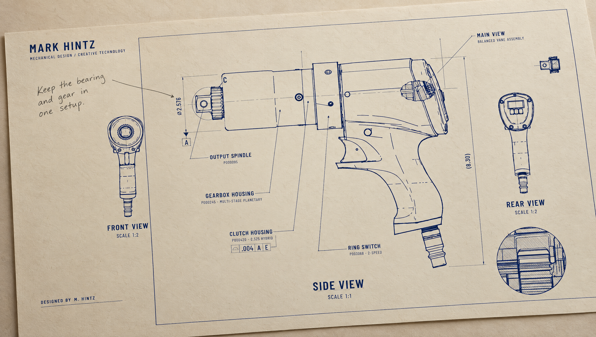
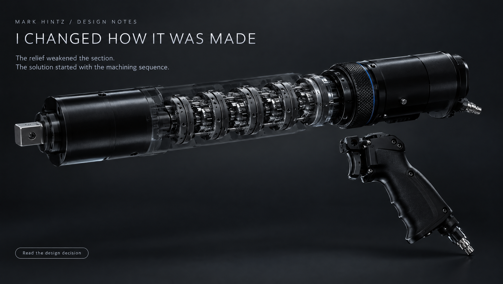
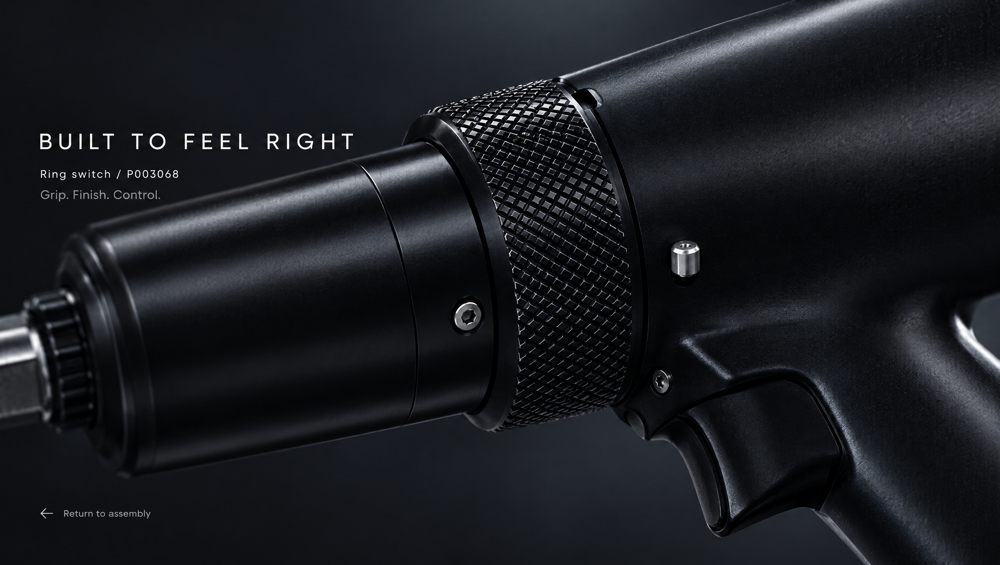
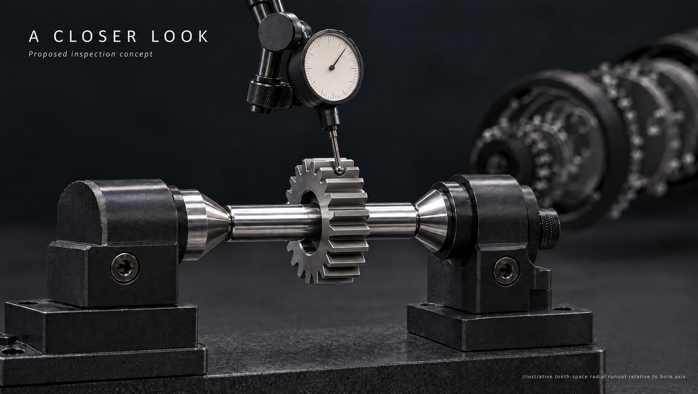
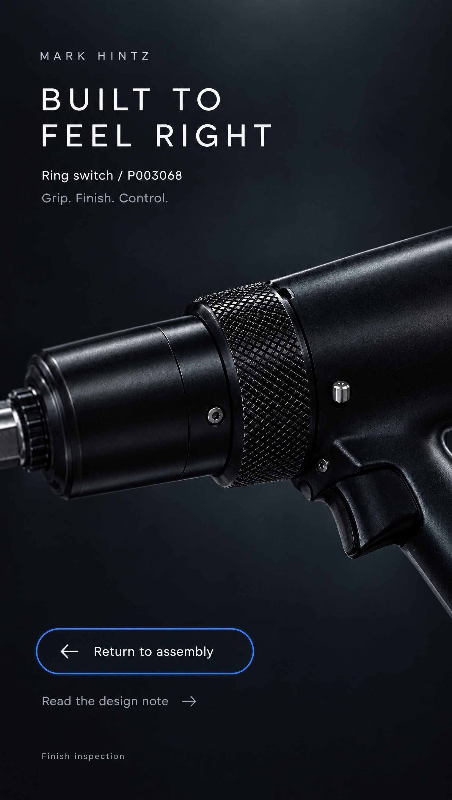

The person behind the precision.
Five appearance studies from the reviewed direction: personal authorship, manufacturing decisions, tactile finish and an optional closer look. These are proposals for composition and storytelling; actual CAD, drawing values and inspection practice remain authoritative.


01 · An authored drawing
Personal commentary beside the formal print.
Generated technical text contains drift. Build this from the real drawing with separate readable annotations.


02 · The decision behind the detail
A visible manufacturing decision becomes the narrative centre.
Revision 3 restores the square drive and pistol-grip identity. Use actual CAD for part identity and extraction.


03 · Built to feel right
Heavy diamond knurl, smooth satin black neighbours and grazing light.


04 · A closer look
Optional inspection concept, with corrected tooth-space contact and refined gear geometry.
Illustrative fixture and geometry. No recorded measurement, passing result or confirmed S3-equivalent setup.


05 · Mobile inspection
Legible identity, tactile detail and a clear return path.
06 · Ring motion study
Ten seconds of camera movement and grazing light. Playback is user-controlled.
Appearance and pacing proposal, not a mechanism demonstration. H.264 preview; original HEVC file is retained.